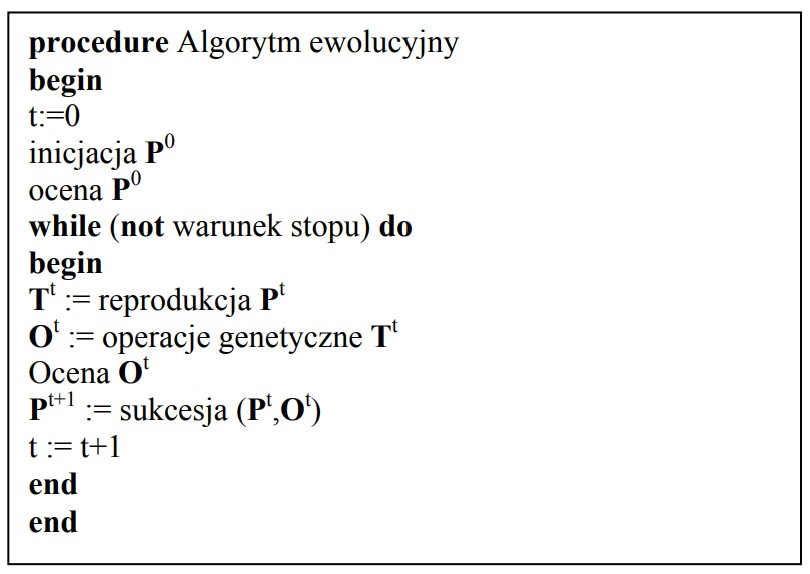

Algorytm
Pseudokod
Algorytm ewolucyjny przeszukuje przestrzeń rozwiązań problemu w celu wyszukania najlepszego rozwiązania. Sposób działania algorytmu wzorowany jest na ewolucji biologicznej.

Elementy algorytmu ewolucyjnego
Metoda kodowania
Metoda inicjalizacji populacji początkowej
Metoda selekcji
Krzyżowanie
Mutacja
Parametry sterujące pracą algorytmu
1. Metoda kodowania
- Wariant ułożenia genów: klasyczny
- Genotyp w postaci macierzy zespołów o wymiarze 20x20.
- Wartości przechowywane w genach są obiektami klasy “Match”.
- Każdy gen (obiekt) zawiera wszystkie parametry danego meczu tj.:
- Drużyna nr 1 (gospodarz)
- Drużyna nr 2 (gość)
- Godzina
- Kolejka
- Stadion
- “Koszt” danego meczu
2. Metoda inicjalizacji populacji początkowej
Inicjalizacja populacji początkowej odbywa się w sposób losowy. W praktyce oznacza to generowanie populacji rozwiązań początkowych zgodnie z rozkładem równomiernym, przy uwzględnieniu ograniczeń.
3. Metoda selekcji
W naszym algorytmie zaimplementowaliśmy dwie metody wyboru nowej populacji. W każdej z metod przewidziano możliwość uwzględnienia elity (pojęcie rozwinięte poniżej).
Selekcja rankingowa
Wybór osobników do kolejnej generacji dokonywany jest na podstawie rankingu utworzonego na bazie wartości funkcji kosztu każdego meczu. Osobniki na wyższych miejscach mają większą szansę na zostanie rodzicami nowej generacji. Parametry rankingu ustalane sa przez uzytkownika.
Selekcja turniejowa
Z populacji wybiera się ilość osobników (tzw. rozmiar turnieju, która kwalifikuje się do zawodów). Następnie dwa najlepsze osobniki są wybierane jako rodzice dla nowego osobnika. Rozmiar turnieju jest stały dla każdej instancji testowej, jednak jego dobór jest losowy.
Elita
Parametr podawany jest w postaci procentów. Oznacza jaki odsetek najlepszych rodziców z poprzedniej generacji może przejść do kolejnej. Jest to możliwość, a nie wymóg, zatem jeśli żaden rodzic nie okaże się dostatecznie dobry to po prostu nastąpi całkowita zmiana.
4. Krzyżowanie
Kolejnym ważnym etapem algorytmu jest etap mutacji oraz krzyżowania. Operacja krzyżowania rozumiemy analogicznie do rozmnażania osobników w przyrodzie, oznacza to że nowo utworzony potomek otrzyma losową kombinację genów od dwóch rodziców, dla naszego algorytmu operacja krzyżowania wygląda następująco. Wybieramy jeden z rodzajów selekcji, która wybiera dwóch rodziców, w kolejnym kroku wybieramy mecze z pierwszej części sezonu pierwszego rodzica, natomiast od drugiego rodzica z drugiej części sezonu, analogicznie tworzymy drugiego potomka, z tą różnicą że odwrotnie wybieramy pierwszą oraz drugą część sezonu. Następnie przechodzimy do operacji mutacji, która polega na zróżnicowaniu osobników, jest stosowana dla kilku losowych osobników populacji. Dzięki mutacjom otrzymujemy duża różnorodność rozwiązań, jednak powoduje to również zepsucie dobrego rozwiązania. Mutacje mogą polegać na:
zmianie wartości losowo wybranego genu
zmianie kilku losowo wybranych genów
przesunięciu genów
operacji inwersji
operacji tasującej, czyli zmianie położeń genów
5. Mutacja
Zmiana gospodarza
Polega ona na wybraniu danego odsetka meczów (podanego poprzez parametr “Stopień mutacji”) z terminarza, a następnie w każdym z nich zamianie gospodarza z gościem. Aby uniknąć błędów w terminie meczu rewanżowego drużyny są również zmieniane. Zatem zmiany zachodzą parami.
Zmiana kolejki
Polega ona na wybraniu danego odsetka par meczów (podanego poprzez parametr “Stopień mutacji”) z terminarza, a następnie zamianie między nimi kolejek. Dokonywanie zmian parami pozwala uniknąć błędów.
Zmiana godzin w 1. części sezonu
Polega ona na wybraniu danego odsetka par meczów (podanego poprzez parametr “Stopień mutacji”) z terminarza w pierwszej części sezonu, a następnie zamianie między nimi godzin. Zmiany dokonywane są parami, a oba mecze są w obrębie jednej kolejki. Pozwala to uniknąć potencjalnych błędów.
Zmiana godzin w 2. części sezonu
Mutacja bardzo zbliżona do powyższej. Polega ona na wybraniu danego odsetka par meczów (podanego poprzez parametr “Stopień mutacji”) z terminarza w drugiej części sezonu, a następnie zamianie między nimi godzin. Zmiany dokonywane są parami, a oba mecze są w obrębie jednej kolejki. Pozwala to uniknąć potencjalnych błędów.